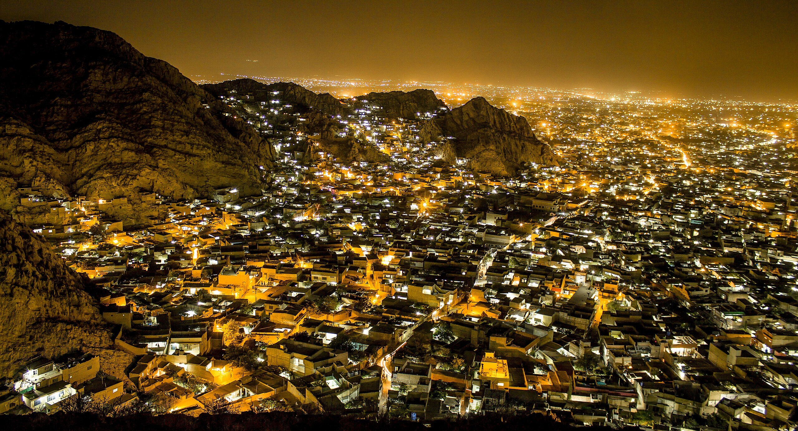

<div class="portfolio-single-load clearfix">
    <div class="custom-full-width-box">
        <div class="custom-container">
            <div class="custom-row align-items-center">
                <div class="custom-image-column">
                    
                </div>
                <div class="custom-text-column">
                    <h2 class="custom-heading">Quetta</h2>
                    <p class="custom-paragraph">
                        
                        Quetta, known as the "Fruit Garden of Pakistan," is the vibrant provincial capital of Balochistan. Renowned for its diverse culinary offerings, Quetta is a paradise for food enthusiasts. Savor the tantalizing flavors of Sajji, a local delicacy prepared with marinated leg of lamb cooked over an open fire. Explore the valley's bustling markets teeming with an array of fruits, including plums, peaches, and pomegranates, sourced from the region's fertile orchards.

                        

                    </p>
                </div>
            </div>
        </div>
    </div><!-- .custom-full-width-box end -->

</div><!-- end single-project -->
